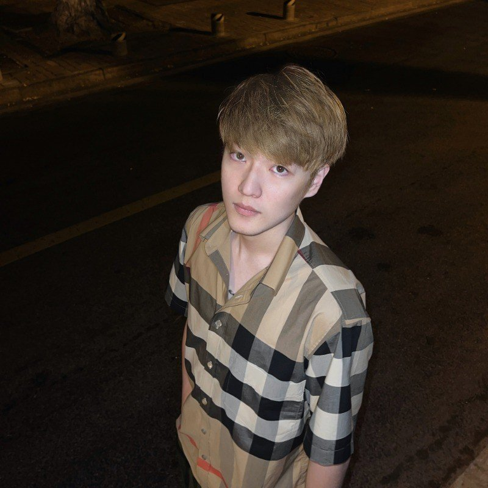

PhD Student in Applied Math & Computational Science
University of Pennsylvania · Wang Genomics Lab @ CHOP
I'm a PhD student in Applied Mathematics and Computational Science (AMCS) at the University of Pennsylvania, working in the Wang Genomics Lab jointly affiliated with Children's Hospital of Philadelphia (CHOP) and the Perelman School of Medicine, advised by Dr. Kai Wang. I'm also pursuing a Master of Arts in Statistics and Data Science at the Wharton School.
My research focuses on making AI systems for healthcare more interpretable, multimodal, and trustworthy — particularly for genetic disease diagnosis. I develop methods that combine large language models with multimodal learning to improve clinical decision support.
During my Master's at Penn, I was fortunate to be advised by Dr. Li Shen. I currently work closely with Dr. Bojian Hou (Meta) and Dr. Jiancong Xiao (Penn) on LLM algorithms. Previously, I completed my B.S. in Applied Mathematics (Summa Cum Laude) at NYU's Courant Institute of Mathematical Sciences and Tandon School of Engineering.
* denotes equal contribution · Full list on Google Scholar
When I'm not in the lab, you'll probably find me on the basketball court. I'm a die-hard Los Angeles Lakers fan and a lifelong supporter of LeBron James — the GOAT, no debate.
Always open to collaborations and new ideas — feel free to reach out!